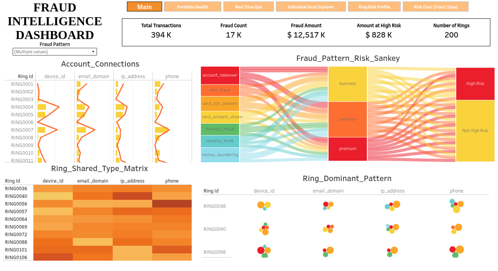
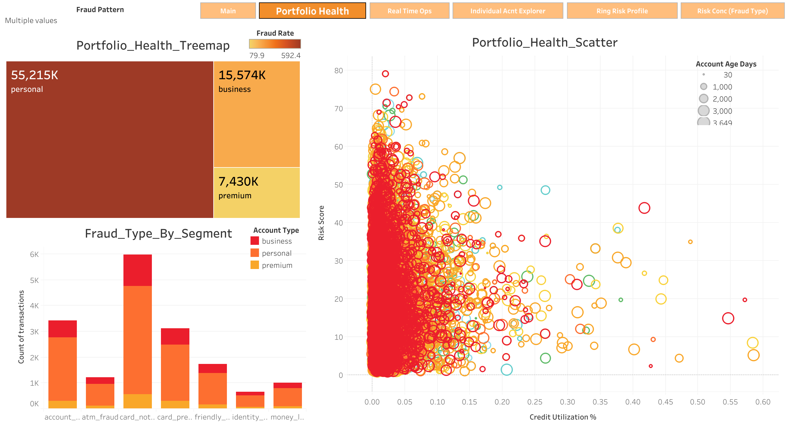
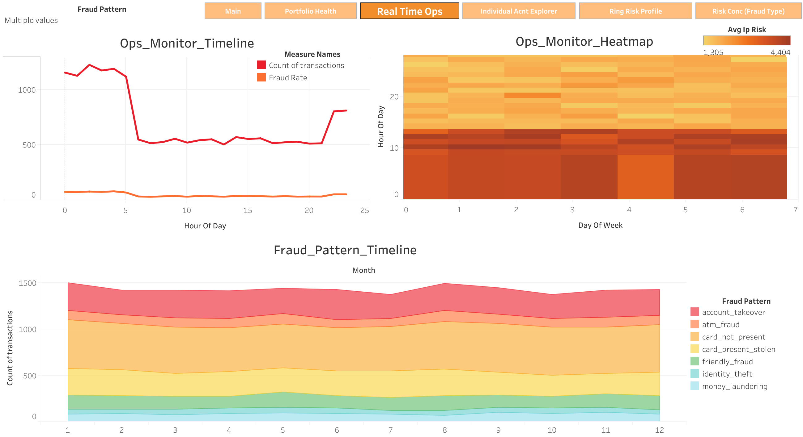
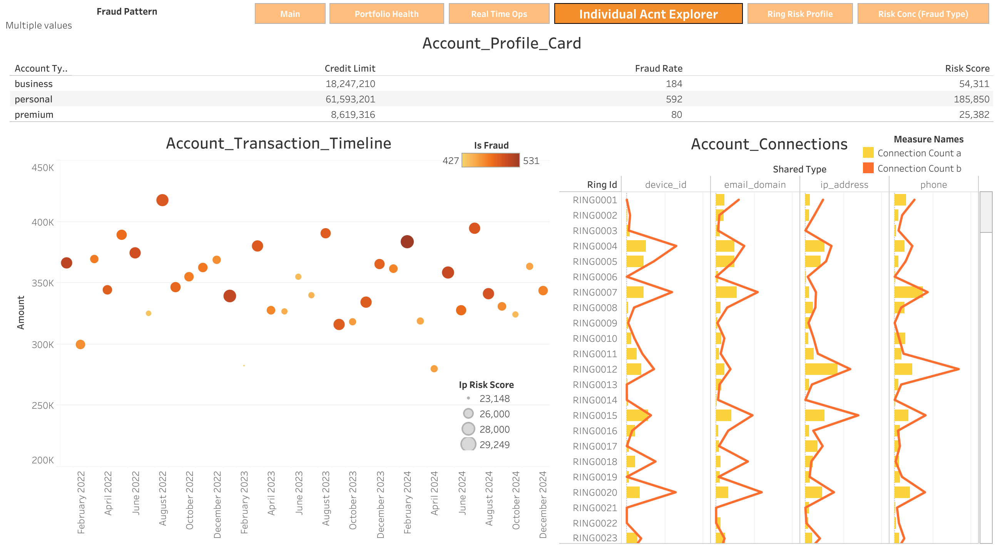
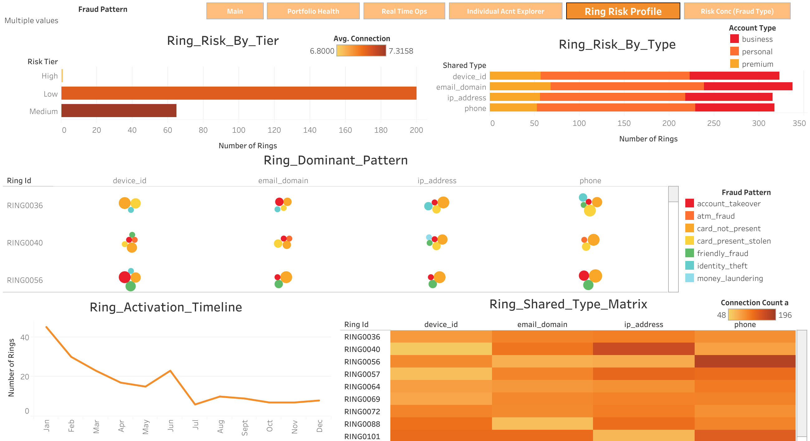
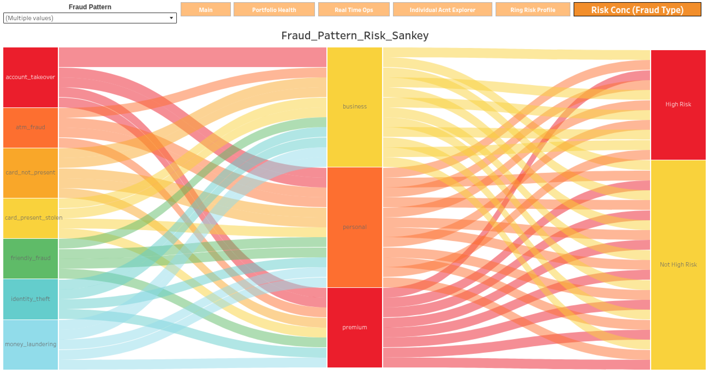

MBA‑trained finance professional working the seam between data analytics and
financial risk — building SQL & Python models that trace fraud rings, score
AML exposure on real transaction logic, and price market risk with CAPM, VaR and
Monte Carlo simulation.
I sit at the intersection of finance and data — trained in an MBA classroom on
capital markets and compliance, and self‑built in SQL, Python and R to test those
ideas against real numbers. I like problems with a verdict at the end: is this
account a mule, is this fraud pattern under‑policed, is this portfolio priced for
the risk it's actually carrying.
NexaBank Analytics is an end-to-end simulation of the transaction-monitoring
function inside a financial-crime compliance team, built to demonstrate the full
pipeline from raw ledger data to an investigator-ready decision tool. Ten advanced
PostgreSQL investigations — CTEs, window functions, z-score normalisation, RANK,
PERCENTILE_CONT — run across 1,000,000+ transaction records spanning
50,000 accounts, 2022–2024, each one answering a specific question a
fraud-risk or AML analyst would actually be asked: which patterns are under-policed,
which accounts are pre-crime candidates, how fast does a ring's activity spread once
one node is compromised. Findings are then packaged two ways for two different
audiences — a pivot-driven Fraud Intelligence Dashboard in Excel for a fast
operational read, and a 6-sheet Tableau workbook — opening on its own
Fraud Intelligence Dashboard main view — built for the
deeper, connected drill-down an investigator needs when moving from a portfolio-level
anomaly down to a single flagged account.
01Resource AllocationUnder vs. over‑policed fraud patterns
02YoY EvolutionAre attacks getting smarter?
03Synthetic IdentityFabricated‑identity scoring
04Money Mule / AMLSAR filing candidates
05Ring ContagionSpeed of fraud‑ring spread
06Cross‑SubsidyFraud tax by customer segment
07Attack WindowThe perfect fraud recipe
08Response Lag Cost$ cost of investigation delay
09Pre‑Crime DriftEarly‑warning candidates
10Pattern EvolutionWhich fraud teaches the rest?
Click any investigation to view its full PostgreSQL query.

Exhibit A — Fraud Intelligence Dashboard (Main)
The command-center landing view: portfolio KPIs up top — 394K transactions,
17K flagged as fraud, $12.5M in fraud value, $828K of it sitting in high-risk
accounts, across 200 identified rings. Below it, a Sankey traces each fraud
pattern through account segment to risk tier in one continuous flow, while the
ring-connection charts surface which specific rings share the most devices,
emails, IPs, or phone numbers — the strongest single signal of a coordinated
network rather than isolated incidents.

Exhibit B — Portfolio Health
Personal accounts carry both the largest fraud exposure ($55.2M) and the
deepest color on the fraud-rate scale — the segment doing most of the damage.
The risk-score scatter tells the sharper story though: risk concentrates almost
entirely at near-zero credit utilization, meaning this isn't revolving-balance
abuse — it's account-takeover and card-not-present fraud hitting accounts that
otherwise look financially quiet. Card-not-present is confirmed as the leading
pattern by volume in the segment breakdown below.

Exhibit C — Real-Time Ops Monitor
Transaction volume swings hard by hour — busy overnight, quiet mid-day — but
the fraud-rate line stays flat through that whole swing and only lifts late at
night, which means fraud isn't simply following traffic; it's disproportionately
timed. The heatmap confirms this is a stable pattern, not a one-off: IP risk sits
consistently higher in the early morning hours across every day of the week —
exactly the kind of finding that should set an investigation team's shift
schedule. The monthly view underneath shows fraud typology holding steady
year-round, so unlike staffing-by-hour, resourcing doesn't need to flex by season.

Exhibit D — Individual Account Explorer
This is the single-entity workspace — the view an analyst opens once
something upstream has flagged an account. The profile card benchmarks credit
limit, fraud rate, and risk score against the account's segment (personal
accounts run a fraud rate over 3x business accounts, 592 vs 184), the timeline
trends that one account's transaction history and fraud flags month over month,
and the connections panel shows exactly which rings it shares identifiers with —
turning "this account looks off" into a documented, defensible case file.

Exhibit E — Ring Risk Profile
Most rings sit in the Low tier by sheer count, but the handful classified
High actually average more shared connections per ring than Low or Medium (7.32
vs 6.80) — the rare rings are the structurally denser ones, which is exactly
where investigator time returns the most. Device ID and IP address are the most
common shared identifiers tying accounts together, ahead of email or phone —
a clear steer on where device/IP fingerprinting would have the highest detection
yield. The activation timeline is the most striking read: ring formation is
heavily front-loaded, with activity dropping off sharply after the first quarter
— consistent with a single onboarding wave of coordinated accounts rather than
steady, ongoing ring formation through the year.

Exhibit F — Risk Concentration by Fraud Type
The closing view, and the one this dashboard is published under — a full-width
Sankey tracing all seven fraud patterns through account segment into a final
High Risk / Not High Risk split. It's the answer to the question every other
sheet builds toward: which specific combination of fraud type and customer
segment actually converts into concentrated high-risk exposure, versus which
gets absorbed and diffused across the portfolio. It closes the loop from
Exhibit A's headline numbers back down to root-cause attribution.
The Tableau "Fraud Intelligence Dashboard" is complete — 6 connected sheets, shown
above. This is the only project in this portfolio with a Tableau component; the
case files below use Power BI and Excel.
Power BI / Excel / SQL · GitHub
Northwind Traders — Sales & Revenue Analytics
A Power BI build on the Northwind wholesale food dataset (8
relational tables), structured as a real analytics engagement — problem
statement, MECE breakdown, EDA, then sales trends, customer
segmentation, employee performance, and supplier & inventory health,
packaged for stakeholder calls.
Exhibit A — Main Dashboard
Anchors on revenue and order-volume trend lines against prior-period
benchmarks, so a stakeholder can spot a slowing month before drilling
anywhere else. Category and country breakdowns sit alongside it, turning
"how's the business doing" into "where exactly is it doing that."
Exhibit B — Customer Analysis
Segments customers by order frequency and geography to separate a small
core of repeat wholesale buyers from a long tail of one-off orders — the
kind of view that tells a sales team which accounts are worth a retention
call versus a one-time fulfilment.
Exhibit C — Product Analysis
Ranks products and categories by revenue contribution rather than raw
units sold, surfacing the gap between what sells often and what actually
moves the P&L — the difference that should drive shelf space and
purchasing decisions.
Exhibit D — Order Analysis
Looks at order volume and fulfilment patterns over time — where orders
cluster by day and season, and how freight cost scales with order size —
the operational counterpart to the revenue view, useful for staffing and
logistics planning rather than sales strategy.
Exhibit E — Supplier Analysis
Compares suppliers by volume supplied and country of origin, which is
really a concentration-risk view in disguise — if too much of the catalogue
depends on one or two suppliers, that's a supply-chain exposure worth
flagging before it becomes a stockout.
Exhibit F — Employee Analysis
Ranks employees by orders handled and revenue generated, giving
management a fact-based starting point for performance conversations
instead of relying on impressions of who "seems" busy.
Power BISales AnalysisCustomer SegmentationInventory & Logistics
A 16-table relational dataset turned into a full operations dashboard for
a fictitious DVD rental chain — customer behaviour and retention, film
& inventory utilisation, staff performance, and revenue & store
comparisons, backed by a narrated video walkthrough of the findings.
Exhibit A — Overview Dashboard
Opens on the headline operating numbers — total rentals, revenue, and
active customers — set against store-level splits, so a manager can tell
in one glance whether an underperforming month is company-wide or
isolated to a single location.
Exhibit B — Revenue Trends
Tracks revenue month over month against rental counts, which separates
two problems that look identical from the top line alone: fewer people
renting versus the same people spending less per rental.
Exhibit C — Customer Analysis
Breaks customers into top spenders versus the broader base to flag
retention risk early — the kind of view that turns "revenue is down" into
"these specific high-value customers haven't rented in weeks."
Exhibit D — Film & Inventory
Ranks films and categories by rental frequency against how much
inventory is tied up in each — flagging titles that are over-stocked and
barely rented next to high-demand titles that may be under-stocked.
Exhibit E — Store Operations
Puts both store locations side by side on rentals and revenue, which is
the fastest way to tell whether a dip is a chain-wide trend or one store
underperforming its peer.
Exhibit F — Staff Performance
Tracks transactions processed and revenue handled per staff member,
giving store managers an objective read on workload distribution rather
than a subjective one.
A multi‑asset portfolio model built on CAPM and Efficient Frontier analysis to
quantify risk‑return trade‑offs and locate the optimal allocation, then
stress‑tested against market‑crash, liquidity‑crisis and bull‑market scenarios
using VaR and Monte Carlo simulation — producing risk‑adjusted breach thresholds
for portfolio decisions.
Engineered competitor‑pricing and project‑benchmarking dashboards in Excel (Power Query) across 5+ active portfolios, delivering weekly pricing signals for go/no‑go acquisition decisions.
Analysed purchase histories and investment patterns for 200+ buyers across channel‑partner networks, lifting qualified walk‑in conversion by 18%.
Produced JBP pipeline reports tracking 6 revenue KPIs per partner for real‑time bottleneck management.
Apr 2024 – May 2024
Research & Analytics Intern — Financial & Policy Analytics
MCX India · Hyderabad, Telangana
Modelled volatility and cyclical risk across 15+ years of MCX base‑metals price data using time‑series analysis in R, improving directional forecast accuracy by ~15 points against a holdout set.
Built interactive Excel and R dashboards on price behaviour, downside risk and ESG compliance for institutional and retail audiences.
Acknowledged for research contribution to the MCX–ICFAI study on hedging & ESG‑SDG integration — ranked 1st among peer submissions.
Dec 2020 – Jan 2023
Client Operations & Compliance Executive
G.R. Enterprises · Bokaro Steel City, Jharkhand
Authored and maintained 10+ SOPs across client operations and compliance workflows, sustaining zero operational deviations across a 2‑year tenure.
Managed compliance documentation and escalation frameworks, holding a zero‑grievance client record with fully audit‑ready processes.
Streamlined onboarding and cross‑functional reporting, cutting resolution turnaround time and strengthening audit readiness.
05 — The Paper Trail
The Paper Trail
Education
MBA in Finance & Analytics2023 – 2025
IBS Hyderabad, IFHE University · CGPA 7.42/10
Business Analytics · Financial Modelling · Research Methodology
M.Com in Business Administration2018 – 2020
Pune University · First Class with Distinction (84%)
B.Com in Cost & Works Accounting2015 – 2018
Pune University · First Class with Distinction (80.58%)
Certifications & Recognition
Data Science ProgramExp. Aug 2026
E&ICT IIT Guwahati
Completed: SQL (PostgreSQL), Advanced Excel, Power BI, Python · In progress: GenAI & Machine Learning